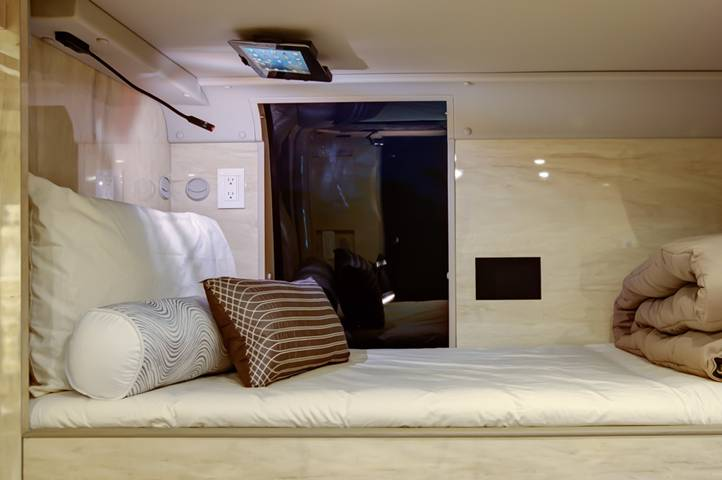
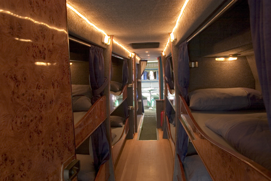

|
NAVKAR TRAVELS |
FACILITIES
|
Best believes that it has a social obligation towards the city where it has grown. A few schemes are listed below. 1.Reservation of Seats:if you have reserved your sit and pay for it then any other person cannot use sit 2.Passenger Refund Claims: if any case you want to cancel your booking then we give full money back 3.Concessional Fare:We are also Providing concession for childern and citizen whose edge >60. 4.Disaster Management:If any case there is any problem in travels hardware we are providing other travels at the same timing. |
|  |  |